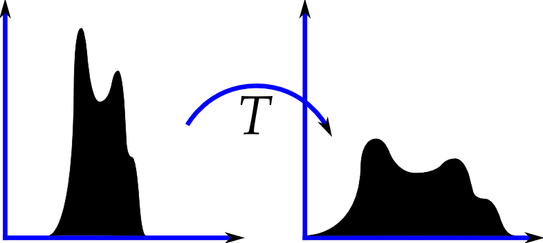

Histogram Equalization
Description
Histogram equalization also known as histogram flattening, is a non-linear image enhancement algorithm that follows the idea that not only should an image cover the entire grayscale space but also be uniformly distributed over that range.
An ideal image would be the one having a flat histogram.
Although care should be taken before applying a non-linear transformation on the image histogram, there are good mathematical reasons why a flat histogram is the desired goal.
A simple scenario would be an image with pixels concentrated in an interval, in which case histogram equalization transforms pixels to achieve a flat histogram image. Thus enhancing the image contrast.

Algorithm
-
First calculate the histogram corresponding to input image.
-
If it is a multi channeled image (e.g. RGB), convert it to a independent color space (like YCbCr, HSV etc.).
-
Then calculate the cumulative histogram over the input image.
-
Normalize the histogram to bring bin values between 0-1. For multi-channeled images normalize each channel independently (by the number of pixels in image).
-
If the histogram of image is H(px) px in [0, 255], then apply the transformation px' = H(px), px' is pixel in output image.
Explanation
Since we will be transforming the image to match a flat histogram, we match the cumulative histogram of the image to the cumulative histogram of a flat histogram.
Cumulative histogram of flat image is H(px') = px' .
Hence,
⇒ H(px') = H(px)
⇒ px' = H(px)
Results
The algorithm is applied on a few standard images. One of the transformations in shown below:
Grayscale Image

RGB

Demo
Usage Syntax:
gray8_image_t inp_img;
read_image("your_image.png", inp_img, png_tag{});
gray8_image_t dst_img(inp_img.dimensions());
histogram_equalization(view(inp_img), view(dst_img));
// To specify mask over input image
vector<vector<bool>> mask(inp_img.height(), vector<bool>(inp_img.width(), true));
histogram_equalization(view(inp_img), view(dst_img), true, mask);| Convert an RGB image to a channel independent color space before trying the histogram equalization algorithm. |